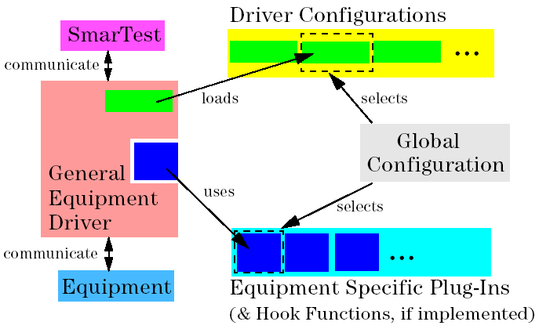

Driver Structure
SmarTest's prober/handler driver is designed to be used with a large number of handlers or wafer probers. To allow for easy accommodation of the driver to a specific equipment, the driver consists of two main components
- the general equipment driver, and
- equipment specific plug-ins.
The term 'equipment' stands for either handler or wafer prober.
This means there is one general handler driver and one general wafer prober driver. Likewise, there are handler specific plug-ins and wafer prober specific plug-ins, each plug-in to be used with the corresponding general equipment driver.
The figure below illustrates the driver structure, and the driver configuration, which is explained later in this chapter.

A general equipment driver provides the complete equipment unspecific functionality:
- interfacing to the SmarTest software
- communication to the hardware interfaces (GPIO, GPIB, LAN)
- communication with the operator
- modification of the driver configuration at run-time
- calling of user-written hook functions
A general equipment driver alone is not functional. It always requires an equipment specific plug-in.
The plug-in provides the driver functionality and data which is equipment dependent, like, for example, the handler specific protocol used for communication between the driver and the equipment. With the plug-in, also hook functions for user-specific driver enhancements are selected.
Typically, one equipment specific plug-in is capable of addressing several handlers, or wafer probers, respectively.
See Appendix A: Plug-In and Default Configuration Files for details on the available plug-ins.
As shown in the figure above, there is a third component complementing the general equipment driver and the equipment specific plug-in: the driver configuration.
Although not part of the driver, the driver configuration is an important part of the whole driver set up, as it allows you to configure the driver for a specific application.
For example, the driver configuration provides the driver with data like the handler type, binning tables and site information. Also, the driver configuration determines the behavior of the driver in various modes of operation, like in normal operation, during operator intervention, or when equipment problems occur.
The driver configuration and the equipment specific plug-in to be used by the driver are selected in the global configuration, as illustrated in the figure above.
Functional changes
- Introduced in SmarTest 7.0.4
- SmarTest 7.2.3: Removed RS-232 support
- SmarTest 7.2.3: LAN supported